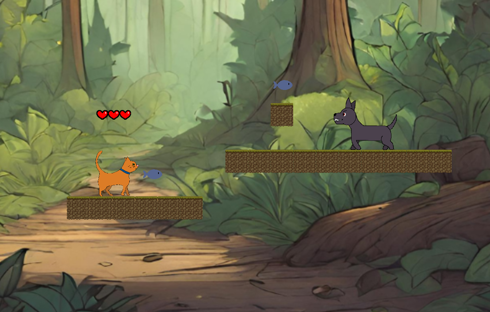

Pumpkin's Adventure
See the Github Repository2-D platformer game following a cat named Pumpkin who goes through various obstacle courses. Built using the Godot Engine in GDScript.

Teacher Announcement App
See the Github RepositoryMobile app designed to allow teachers to post announcements to their students. Built in React Native using Expo.

The 28% Women in STEM Website
Learn more about this projectWebsite for the 28% Women in STEM newsletter at Pasadena High School. Built in HTML/CSS/JavaScript using a Sheetdb API.

BARR Student Check In Form
See the Github RepositoryWebsite to streamline the process of entering data following student grade checks for teachers. Built in HTML/CSS/JavaScript using a Sheetdb API.